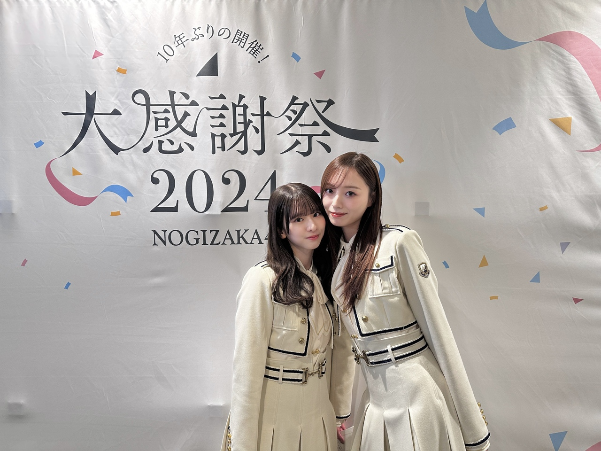
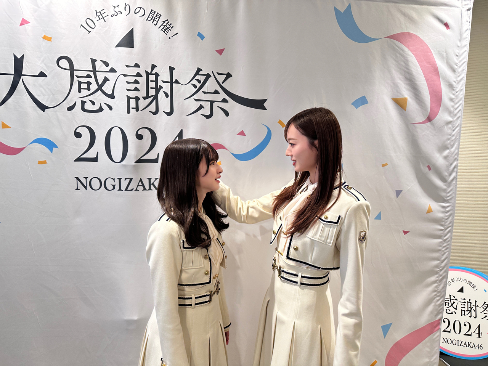
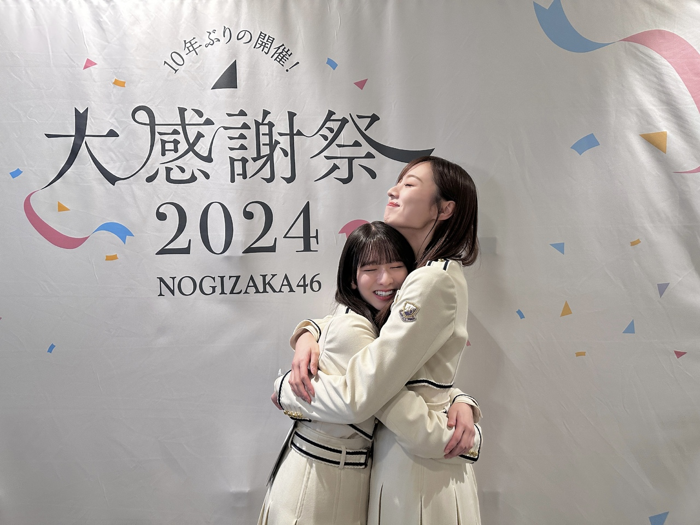
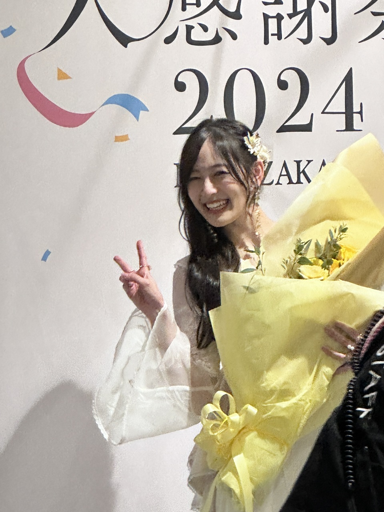

抑えられない気持ちも あるよね
皆さま、お久しぶりです。
大感謝祭 ２日間、ありがとうございました！
１０年振りの開催だったんです。
ちゃんと感謝届いたかなあ
年末のタイミングで皆様に直接お会いして
１年の感謝を伝えられる場。
特別な２日間になりました(^^)
配信で見てくださった方もありがとうございました！
乃木坂ではもうおなじみの、
髙橋大輔アナウンサーも
今回お手伝いくださいました。
今年のツアーでもプリンセスバトルのナレーションを担当してくださったり、
長く支えてくださって 心から感謝しています。
素敵な司会を、ありがとうございました！
そして、
発表事もたくさんありました！
２０２５年 ５月１７日、１８日の２日間
味の素スタジアムにて開催されます！
まだ乃木坂46として、立ったことがないステージ。
また新たな大きいステージに立てます！
皆様のおかげです。本当にありがとうございます！
１３年も繋いで、紡いできたグループ。
６期生のみんなも もう仲間入りしているかな。
乃木坂の歴史を一緒に辿りながら
私たちと共にお誕生日お祝いしましょう〜！
５月の野外、気持ちいだろうなあ〜
雨、降りませんように！
そしてもうひとつ。
菅原咲月が 副キャプテンを務めてくれることになりました！
さつきが乃木坂にきてくれてから
一緒にお仕事をすることが増えていくうちに
誰かのために涙することが多かったり
人の感情が動く時に寄り添うように、同じように動いたり
そんなところがとても、乃木坂だな〜って、
さつきを見ていると思うのです。
加入してすぐって、
自分でいっぱいいっぱいだったり
自分をどうみせるか
自分がどうなりたいのか
そんな自分との向き合いが
当たり前に多くなると思うのですが
さつきは 周りの状況をみたり
今どんな風に動けばいいのかと考えたり
周りの子に光を当てたり、
そういうことが当たり前にできる子です。
なかなか出来ることではないなと、思うんです。
そんなさつきが副キャプテンに任命すると聞いたとき、
これまでの彼女の姿を思い返し
今後のさつきに期待して任されるのも納得でした。
そしてなにより、
副キャプテンになる子に１番持っていて欲しいと思っていた
乃木坂への愛がすごく大きいので(^^)
ここへの愛情が強いさつきなら
大丈夫だ！と思えました。
とはいえ、
不安とか プレッシャーとか
まだ到底拭いきれないしがらみが 数え切れないほどあるはずで。
副キャプテンという立場の難しさは
私しか分かってあげられないから
少しずつ、さつきなりの副キャプテンの形を探しながら
必ずさつきにとってこの立場を担うことがプラスになるように支えます！
そしてまだまださつきも加入して3年、
個人としてやりたい夢や目標も沢山あると思います。
看板がついたからといってその夢を閉ざすことなく
さつきの夢もたくさん叶えて欲しいし
そんな環境もつくってあげたい。
あげます！ので、ご安心を(^^)
隣にいることが増えるかな(^^)
嬉しいな。
梅澤 菅原 が引っ張る体制の乃木坂も
応援してくださったら 嬉しいです！
一緒の目線でグループを見られる仲間が
ずっと欲しかったから、心から嬉しい。
副キャプテンを受けてくれて
心から感謝しています。

そして、さつき推しの皆様は
たくさん甘やかしてあげてください！！
ファンの皆様の存在が
かなり、かなり大きくなってくると思います。
私がそうだったから！
たくさん褒めてあげて欲しいし、
たくさんさつきを見てあげてほしいです！！
わたしも、そうする！！
もうしてくれているか！
よろしくお願いいたします(^^)

身長差すごよねって話をした

それから葉月の卒セレ！
８年前、出会った時から
無邪気でかわいい葉月だったけど
あの頃と変わらない笑顔と 想いがあって
でも、ものすごく綺麗になって
素敵な女性になっていて
共にしてきた８年の長さをすごく感じた。
寂しくなるなあ
でもまだもう少しあるので
年内いっぱい、楽しみます！
まだあるから
ここで多く語るのはやめておきます(^^)

だいすきな笑顔
Original：https://www.nogizaka46.com/s/n46/diary/detail/102965?ima=4930&cd=MEMBER